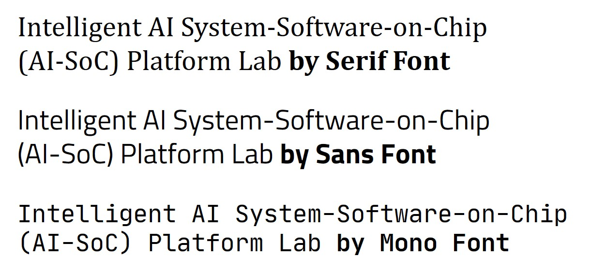

Useful Software
Editing
Gvim for Win32
Command-based Editor for Programmer
Program [gvim]
Editor configuration [vimrc]
|
Programmers Fonts
There are three categories in fonts: serif, sans, mono. Serif font is used for main text, Sans font is for texts in figures, or featured text. Mono font is usually used in code due to the fixed width. Recommended open source fonts are like the following:
|  |
Aspell for Win32
Command-line tool for spell checker
Download tool and intall it [Down]
Download dictionary and install it [Down]
Execute the following command: aspell –lang=en –mode=tex check FILE.txt
Typesetting
LaTeX
LaTeX is a sort of typesetting system for structured documentation, which is widely used in writing formal paper such journals and conference papers. |
Programming Environment (Compiler, Utilities)
There are various C compilers, such as Visual C. We recommend to use gcc compiler as open source, under Linux, but Linux installion for just using gcc is too complex. So, as alternatives, MinGW, which is Win32 pre-compiled version of gcc compiler, is widely used due to easy installation. All command options are equivalent to gcc in linux. Comnand-line automation tools under Windows |